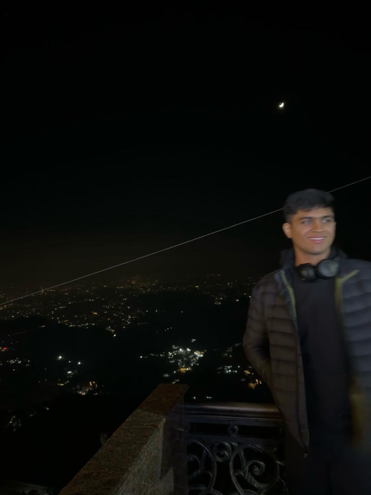

Parshiv Kapoor
Engineering student at IIT Roorkee. Medical imaging, robustness, interpretability, and VLM reasoning. 5th in SeePhys @ ICML 2025.
I build reliable, practical AI systems—surgical video, LiDAR–camera fusion, scene-graph reasoning for VLMs.

Highlights
SeePhys @ ICML 2025
Ranked 5/2000+ via VLM pipeline combining schematic interpretation + NLU.
Instrument Triplets
Weakly-supervised {instrument, verb, target} recognition & localization.